OpenClaw's Prospects in Bioinformatics Attract Peter Steinberger's Attention: Will Multi-Omics Take Off Again?
Key Points
- You raise lobsters, but only use them for what Siri could already do? Perhaps the prospects go beyond this...
- The Present: Both financing and M&A are active, multi-omics is entering the deep waters of industry shakeout
- The Past: Multi-omics was once a narrative hotspot comparable to lobsters — from ARK's nine-year love-hate relationship with multi-omics
- Conclusion: The greater challenge of bioinformatics + Agentic AI may lie in data compliance and ethical norms
Section 1 - OpenClaw: Beyond What Siri Can Do?
At the UK AI Agent Hackathon held at Imperial College London on March 1, 2026, Spanish biologist Manuel Corpas from the University of Westminster demonstrated to OpenClaw founder Peter Steinberger the results of combining OpenClaw with multi-omics:
"I introduce ClawBio... ClawBio gives AI coding agents real bioinformatics skills: pharmacogenomics reporting, genomic equity scoring, nutrigenomics, ancestry PCA, and more. Every skill runs locally — no genetic data leaves your machine."
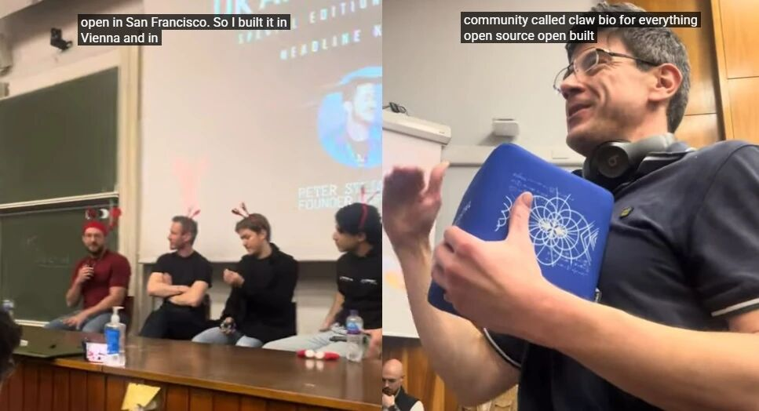
In fact, just days after OpenClaw was released, Ming Tommy Tang, Director of Bioinformatics at AstraZeneca, expressed optimism about OpenClaw's applications in bioinformatics through a Twitter post.
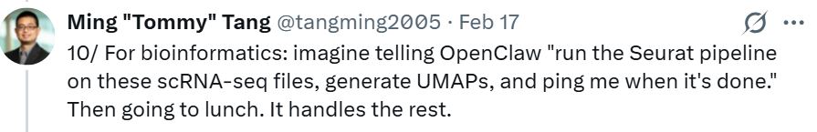
However, at that time, the focus was still on the security of "local deployment," and with the overwhelming public attention on general-purpose agentic AI applications, related voices attracted relatively limited attention and discussion.
As "Tencent's free installation of lobsters" and "Shenzhen district government's OpenClaw policy" emerged, OpenClaw has entered the public eye, but it has also faced increasing criticism:
- In the YC incubator community, SunshineTheCat complained: "I keep seeing people say OpenClaw completely changed their lives, and the accompanying picture shows 58 Mac minis on their desk... Frankly, OpenClaw seems to be just another gimmick used by 'influencers' and 'opinion leaders' to show how amazing they are." Another developer added: "Every time I want to use this kind of AI Agent, I end up finding that writing a script myself is much faster. Adding AI to such simple tasks is simply stupid."
- There are numerous posts on Reddit communities stating bluntly: "OpenClaw is an expensive and terrible version of Github Copilot." Some developers even checked its source code, questioning that its astonishing GitHub Star count contains water and is misleading, believing that this "exponential surge" does not represent its actual user value.
- Chinese media pointed out: OpenClaw's (icon is a lobster, commonly known as "raising lobsters" in circles) explosion is more of a self-celebration among geek and digital circles. For ordinary people, most of the scenarios it can currently land in can already be satisfied by existing conversational large models (such as ChatGPT) or built-in voice assistants on phones (such as Siri), and it's hard to imagine what AI needs ordinary people have that require 24-hour continuous operation.
Every new thing that appears must face questions about "incremental value," "usefulness," "replacement significance," and "switching costs":
When cars first appeared, "It's useless except for scaring passersby and horses." Early cars had extremely high failure rates and often broke down on the roadside. The favorite phrase of onlookers at the time was: "Get a horse!"
When Steve Jobs and Bill Gates tried to put computers in everyone's living room, IBM's then-leader Thomas Watson left a famous quote: "I think there is a world market for maybe five computers." The public's view was: Why would ordinary people need to do accounting at home? Paper, pen, and abacus are completely sufficient for me. Computers at that time required learning complex command lines (such as DOS), which had a learning cost high enough to dissuade 99% of users.
...
That moment then is just like this moment now.
Finding, identifying, and confirming the real vertical applications of Agentic AI represented by OpenClaw may have just begun.
This article will start from the past and present of multi-omics and explore its possibilities in bioinformatics.
Section 2 - The Present: Multi-Omics Enters Industry Shakeout
To understand the possible impact and benefits of Agentic AI on the multi-omics industry, we need to first understand what multi-omics actually is.
For example:
A pharmaceutical company is developing a new lung cancer drug but finds that only 30% of patients respond. Traditional genetic testing (single-omics) cannot find the reason. So they turn to Vizgen for spatial omics and Alamar for proteomics.
- Analysis results: They discovered that the 70% of non-responding patients, although having the same genes, have different protein expression, and the immune cells around tumor cells are not positioned correctly (spatial information).
- Final product: The pharmaceutical company did not develop a "multi-omics therapy," but based on the analysis results, precisely sold the drug only to the 30% of matching patients, or developed a combination therapy for the other 70%.
The concept of "multi-omics" was proposed around 2017 and was once regarded as a "next-generation internet" level opportunity after receiving attention from ARK's "Cathie Wood."
From 2022 to 2024, it fell into silence with very dismal market performance (detailed later).
In the past year, investment and financing related to multi-omics have become lively again.
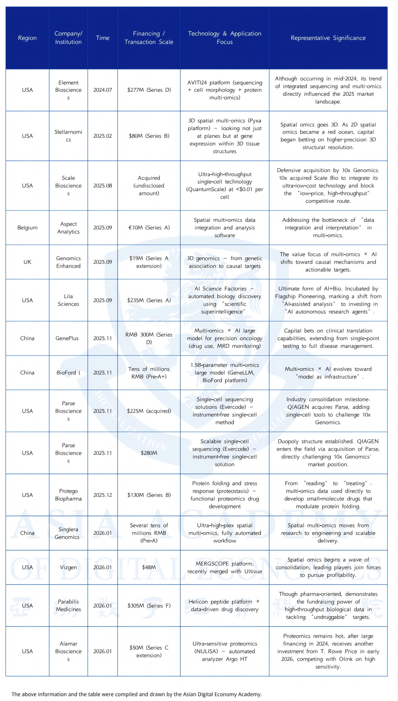
Perhaps after reading the concept introduction above, many people will wonder, this seems to be just a cash flow business for testing fees, why is it worth pursuing by early-stage investors seeking high leverage?
In fact, testing fees are just the tip of the iceberg.
Based on the delivery forms of the above leading projects, they can be divided into the following three "business models":
Type 1: Razor and Blade Model
Representative companies: Element Biosciences, Stellaromics, Parse Biosciences
These companies don't just sell "services," they sell hardware equipment (razors) and matching proprietary reagent kits (blades). Once a laboratory buys a sequencer worth hundreds of thousands of dollars (such as Stellaromics' Pyxa), every drop of reagent and every chip must be purchased from this company.
For this type of project, the significance of Agentic AI represented by OpenClaw is that it is expected to lower the usage threshold of multi-omics equipment.
Many hospitals and small laboratories can afford sequencers but "can't afford to use them."
Running a multi-omics experiment once produces several TB of raw data (such as FASTQ files), which must rely on professional bioinformatics engineers to write code, clean data, and run analysis pipelines.
Perhaps in the future, vertical Agents will be able to achieve:
- A wet-lab biologist who doesn't understand code only needs to send instructions to the Agent in Slack or WeChat: "Extract the data from last night's AVITI24 sequencer, run the standard single-cell analysis pipeline, pick out abnormally expressed genes and generate charts."
- The Agent will automatically call scripts in the background, allocate computing power, and complete tasks.
The faster the machine runs and the more frequently it's used, the faster the consumption of reagents and chips. The recurring revenue of such companies will expand.
Type 2: Data Assets and Analysis Software
Representative companies: Lila Sciences, Tsindao Biotech
This category can be further divided into two types:
Earlier-stage ones are SaaS Wrapper-type analysis tool companies. These companies used to make money from "information gaps" and "engineering assembly." They package open-source algorithms into software with interfaces or provide outsourced data cleaning and integration services, selling to pharmaceutical companies and research institutions, such as Aspect Analytics.
If a locally deployed OpenClaw can autonomously download the latest open-source multi-omics algorithms from GitHub, automatically configure the environment, and complete data integration according to researchers' natural language instructions, why would pharmaceutical companies still spend hundreds of thousands of dollars annually to buy a traditional analysis software license?
Many people say that lobsters will kill SaaS. While this is true, at least for vertical fields with deep domain knowledge like bioinformatics analysis, the Agentic AI that kills SaaS will most likely be created by insiders, and may even be incubated by these existing SaaS companies themselves.
In other words, the emergence of Agentic AI puts these SaaS companies in a "either incubate your own Agentic new product to disrupt yourself, or wait to be disrupted by others" dilemma.
More recently emerged ones sell "biological intuition fed by high-dimensional data" multi-omics companies. Of course, this intuition is mainly manifested as vertical large models. Multi-omics data of genes + proteins + spatial + clinical is an extremely scarce asset. In the era of AI large models, whoever owns the largest and most complete biological database can train the strongest "biological brain."
Type 3: Self-developed "Pharmaceutical Factory"
Representative companies: Protego Biopharma, Parabilis Medicines
This is the logic most pursued by top VCs (such as Flagship Pioneering) recently. Multi-omics technology can find "undruggable targets" that traditional methods simply cannot see. Once they use multi-omics platforms to independently develop a new drug, such as a drug targeting abnormal protein folding, its value will instantly leap from tens of millions to tens of billions.
Finding new drug targets is like finding a needle in a haystack, requiring cross-comparison of genomic and proteomic data, reviewing vast medical literature, and then conducting molecular simulations. This usually requires a large interdisciplinary R&D team to spend several years, which also makes new drug R&D costs high, making it only possible for very strong pharmaceutical companies.
The emergence of Agentic AI like OpenClaw may, to a large extent, level the playing field between startups and multinational pharmaceutical giants in early R&D computing power and manpower. With the help of Agentic AI, startup teams' R&D throughput will be able to match the efficiency of pharmaceutical giants' R&D centers in the past.
Section 3 - The Past: Multi-Omics as a Narrative Hotspot
Phase 1: From CRISPR to Multi-Omics (2017–2022)
In Big Ideas 2017, ARK listed "CRISPR Genome Editing" as a separate chapter, proposing the "Genomic Revolution", including DNA sequencing, gene editing, CRISPR, molecular diagnostics, and other directions.
In the report, ARK provided a very catchy data narrative: Gene sequencing costs have dropped from about $100 million in 2001 to about $1,000 in 2016.
When sequencing costs are only one hundred-thousandth of what they used to be and continue to decline faster than Moore's Law, infinite possibilities will be triggered—
Genetic data accumulates rapidly, gene editing tools gradually mature, and biotechnology enters the stage of large-scale application.
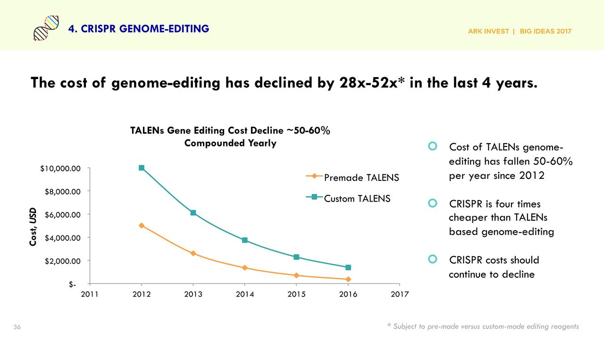
ARK viewed CRISPR as the next-generation biotechnology platform and proposed that "life sciences will enter a data-driven era like information technology."
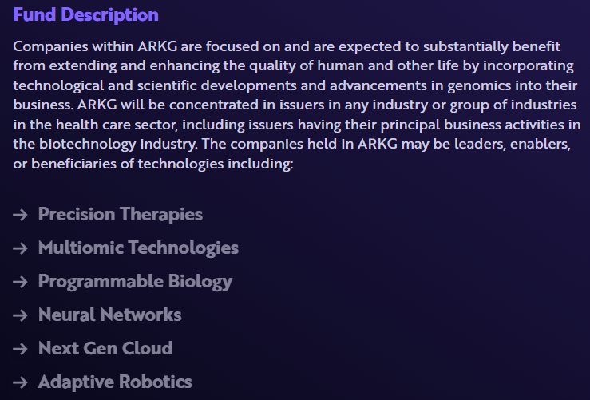
2018–2019: Research Focus Begins to Shift Forward
As research progressed, ARK quickly discovered a practical problem: CRISPR provides powerful intervention tools, but many diseases cannot be explained by single gene mutations. Specifically, cancers, immune disorders, and neurological diseases often involve changes across multiple biological layers, including DNA mutations, RNA expression, protein function, and cellular state. ARK turned its attention to biology's Central Dogma, which describes this multi-layered information structure: DNA → RNA → Protein → Phenotype. This can be seen as the conceptual prototype of multi-omics.
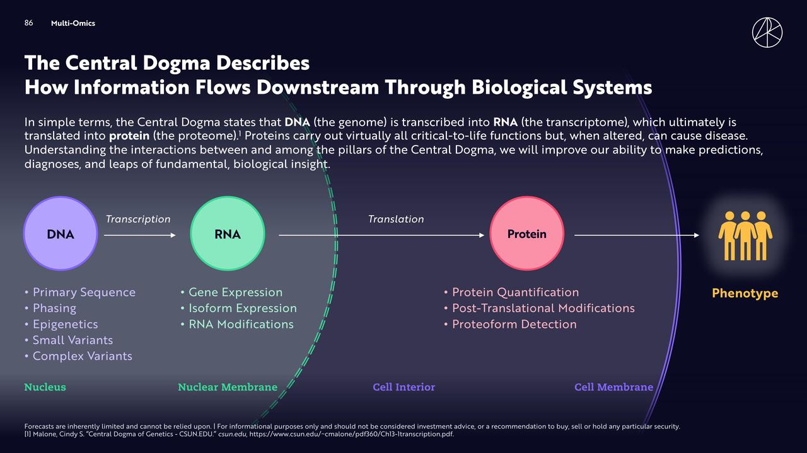
2019–2022: Multi-Omics Becomes an Investment Theme
In September 2019, 10x Genomics (TXG), then focused on single-cell sequencing, completed its IPO at $39 per share. Shortly after listing, ARK began buying TXG shares in large quantities. According to ARK fund disclosures, ARKG held approximately 2 million shares of TXG by early 2020, and TXG once became one of ARKG's top ten holdings.
As biotech valuations rose during the pandemic, TXG's stock price exceeded $200 per share in early 2021, with a market capitalization reaching approximately $20 billion, generating substantial returns for ARK's investment.
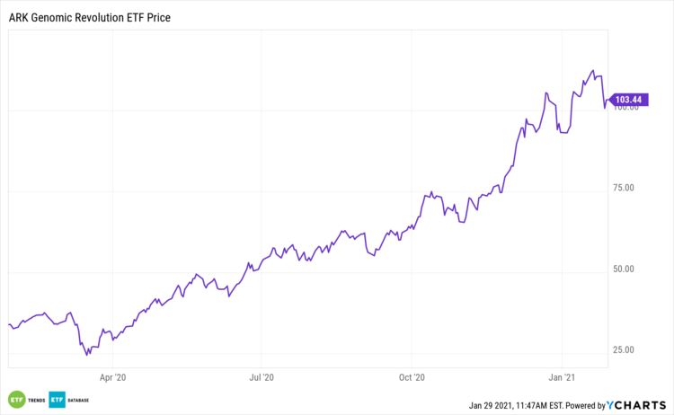
At the same time, ARK also made a significant investment in another sequencing platform company, Pacific Biosciences (PACB). Long-read sequencing can read longer, more complete DNA fragments, thereby revealing complex genomic regions that short-read technologies struggle to cover. It was once very expensive, but prices are gradually approaching those of ordinary sequencing. When prices become comparable, users prefer the better technology. Once costs drop to a certain level, the industry may experience explosive growth.
In Big Ideas 2021, ARK focused on the development of long-read sequencing technology, arguing that the ability to read more complete genetic information would become a critical infrastructure for the next phase of biological research. Based on this, ARK projected that the market size would grow from approximately $250 million in 2020 to about $5 billion by 2025, corresponding to a compound annual growth rate of roughly 82%.
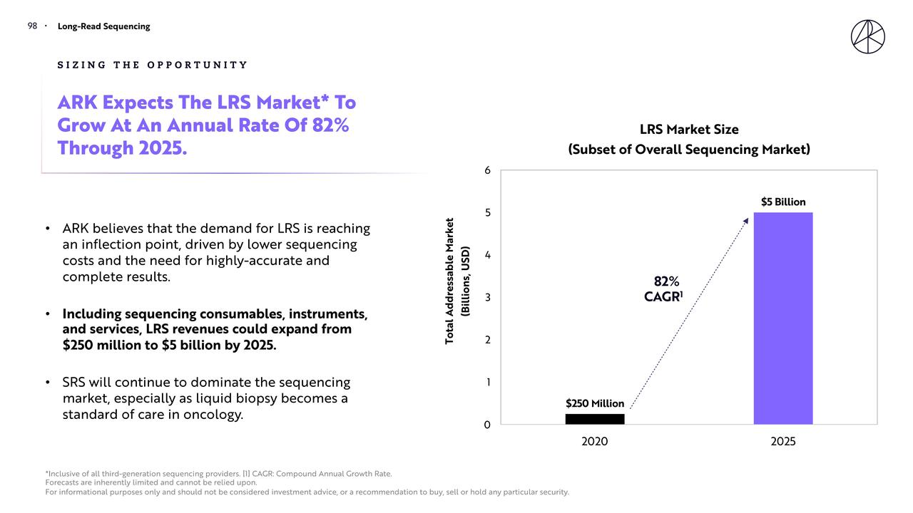
By the 2022 Big Ideas Summit (BIS), ARK further proposed "Multi-Omics: The Future of Molecular Biology". This framework emphasized three trends:
- First, sequencing and testing costs continue to decline, and the scale of biological data is growing rapidly.
- Second, multi-layered data (DNA, RNA, protein, etc.) need to be analyzed together to more fully understand living systems.
- Third, platform companies that can continuously generate data will capture higher value in the industrial chain.
Looking back at this phase, ARK initially focused on the interventional capability brought by gene editing. As research deepened, it began focusing on the observational capability of living systems. Single-cell, spatial omics, and long-read sequencing technologies have provided life sciences with a more complete data perspective. ARK's investment behavior during this phase was essentially a bet on next-generation biological data infrastructure. Whoever can continuously produce high-dimensional biological data will have pricing power over the industrial chain.
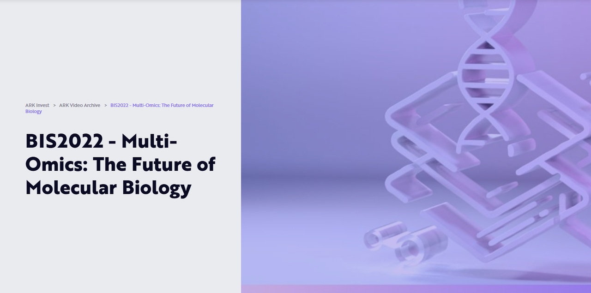
Phase 2: Reality Check – Stock Correction (2023–2024)
By around 2021, multi-omics technology had reached a narrative peak in capital markets. Single-cell sequencing, spatial omics, and long-read sequencing continued to generate new biological data, and investment institutions widely believed that this data would push precision medicine into a new stage. ARK repeatedly emphasized in its research reports that multi-layered biological data integration would become the core methodology of future biology research.
But as research progressed, a practical problem gradually emerged: data production speed far exceeded data analysis capability. Single-cell and spatial omics experiments often produced terabytes of data, with data structures showing typical "large p, small n" characteristics: extremely high variable dimensions, limited sample numbers. Multi-omics analysis required complex data cleaning, dimensionality reduction, and model training processes. Many research teams needed weeks or even months to complete a single full analysis. Data scale continued to grow, but stable clinical applications and commercial products remained limited.
This technical bottleneck was quickly reflected in industry development. Around 2022, several multi-omics companies began adjusting their development pace. For example, 10x Genomics announced in 2022 the suspension of some Visium HD project progress while slowing some R&D investment to cope with market demand uncertainty. Meanwhile, sequencing company Pacific Biosciences also readjusted its product roadmap in 2023, emphasizing long-read sequencing's positioning in the scientific research market rather than entering large-scale clinical applications in the short term.
The capital market's response to this change was very direct. After 2021, the biotech sector began a significant correction. Multi-omics platform company stock prices fell sharply. 10x Genomics (TXG) once exceeded $200 per share in 2021, falling to below $40 at its lowest in 2023. Pacific Biosciences (PACB) fell from about $50 in 2021 to about $8.
ARK's own genomics fund, ARKG (ARK Genomic Revolution ETF), reached an all-time high of approximately $115 per share in February 2021, then continued to decline. By mid-2023, the fund price had fallen to about $25, a maximum drawdown of more than 70%.
In 2024, spatial omics company NanoString Technologies (NSTG) filed for Chapter 11 bankruptcy protection after losing a patent lawsuit. NanoString had been an important player in spatial omics, and its GeoMx platform was widely used in cancer research. ARK had also held shares in the company in its early days. With persistent losses and a tightening funding environment, the company eventually exited the public market. This event further dampened investor confidence in the speed of multi-omics commercialization.
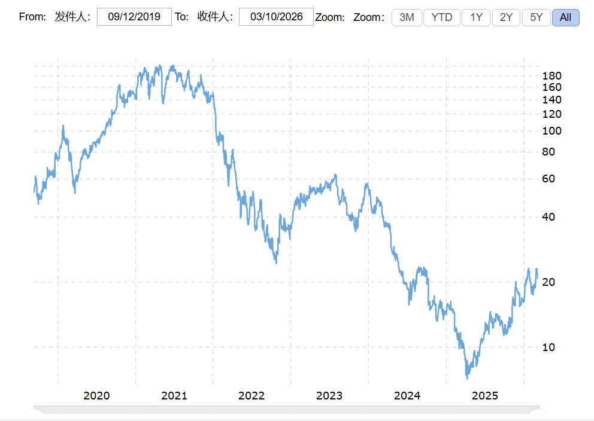
Notably, in the face of this correction, ARK did not completely exit the multi-omics field. ARK still believed that multi-omics platforms would become the data infrastructure for future life sciences, but the commercialization cycle would be significantly longer than early market expectations. In ARKG's top ten holdings for 2023, 10x Genomics consistently maintained a weighting range of approximately 5%–8%, while Pacific Biosciences also remained at around 3%–5%.
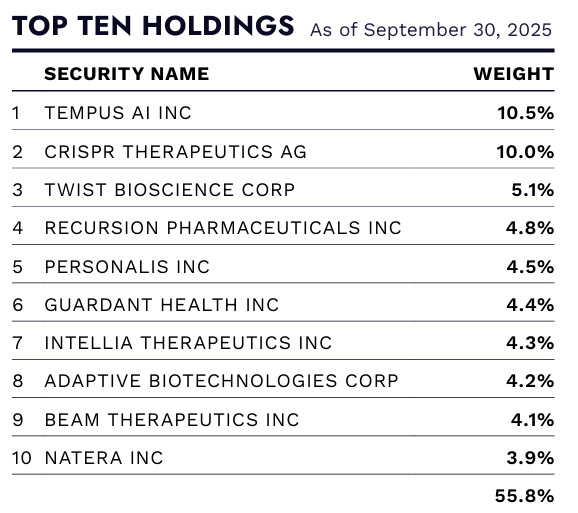
This phase revealed a key fact: technological trends do not automatically translate into commercial value. Multi-omics technology has significantly increased data production capacity, but before AI capabilities mature, large-scale biological data remains difficult to analyze efficiently. The capital market completed a repricing process during this phase.
Section 4 - Conclusion: Data Compliance and Ethical Challenges
The development history of multi-omics reveals that technological trends and hot narratives do not automatically translate into commercial value. However, despite facing numerous questions, the Agentic AI paradigm represented by OpenClaw seems to be undoubtedly a productivity-level innovation, with its decisive point lying in how to effectively combine with various vertical fields and how to expand the scope of "execution capability" as much as possible.
But specifically for bioinformatics + Agentic AI, there is a relatively special challenge in "how to balance biological sensitive data protection with industry development interests," which is a new issue currently faced by countries around the world.
4.1 Current Status of Data Sources
If a company says in a roadshow that its underlying large model data comes entirely from "accumulated testing service orders," it is most likely whitewashing or walking in an extremely dangerous legal gray area.
The reality is that pharmaceutical companies and hospitals pay companies to do testing, and the data assets generated belong to the customer. Whether it's the US HIPAA or China's extremely strict Regulations on the Management of Human Genetic Resources, they absolutely do not allow testing companies to privately retain customer genetic data to "train models" (train commercial large models).
In reality, the main sources are:
- First category: public gene banks established by governments worldwide. Such as the UK's UK Biobank, the US's TCGA, NCBI GEO, which contain tens of PB of publicly sequenced data accumulated over the past decade or so. Any multi-omics large model (including the 1.5 billion parameter GeneLLM), in its "Pre-training" stage, the vast majority of base data is crawled from these public data.
- Second category: hospital-enterprise cooperation. Directors of top tertiary hospitals hold tissue samples from thousands of rare disease or cancer patients, along with detailed clinical follow-up records (what drugs patients took, how long they lived), but hospitals don't have tens of millions in budget to do multi-omics sequencing.
- Third category: "tools for data." Many multi-omics companies develop very useful bioinformatics analysis cloud platforms or open-source data visualization tools, providing them free or at low cost to researchers worldwide.
- Fourth category: heavy asset self-construction. If there really isn't a certain type of disease's high-dimensional multi-omics data on the market (such as 3D spatial omics data for a specific neurodegenerative disease), and this is an indispensable piece of the puzzle for large models, what to do? Take the financing and legally and compliantly purchase frozen tissue sections from commercial "biological sample banks."
4.2 Crises and Concerns
For the three categories of "bioinformatics + Agentic AI" analyzed above, there may be the following issues respectively:
Category 1: Hardware and Equipment Ecosystem — "Loss of Control and Ethical Collapse" Brought by Automation
Agentic AI will greatly lower the usage threshold of equipment, allowing wet-lab personnel who don't understand code to produce data like crazy. But this will add to, or further amplify, existing risks in hospitals and laboratories.
Category 2: Data Assets and Large Models — "API Cross-Border" Bringing Sovereignty Crisis
This type of project attempts to establish industry infrastructure through large models (such as GeneLLM), while Agentic AI is the best channel for calling these infrastructures. This directly triggers the most sensitive data compliance nerves globally.
Category 3: Self-developed "Pharmaceutical Factory" and Micro Biotech — "Practitioner Crisis" Under Structural Outbreak
As mentioned earlier, the industry's KSF (key success factors) will not disappear, but will only shift to "Dry-Wet Loop" and "New Modalities" manufacturing. This is a brutal reshuffle for the industry ecosystem and practitioners.
In the end, putting Agentic AI into multi-omics laboratories is like giving a tireless super hacker the "source code of life" for all humanity.
The future Biotech battlefield will see an extremely brutal shift in core barriers: no longer competing on "whose AI is smarter," but on "whose robotic arm (dry-wet loop) operates faster," "whose clinical resources are harder," and "whose legal team can be more ahead of the curve."
In this game of seeking the Holy Grail of life, AI brings new productivity tools and infinite momentum, but what really determines whether you can stay at the table is respect for real-world rules and the brakes.
- [1] YouTube. [Video: OpenClaw / AI agent related]. youtube.com. youtube.com/watch?v=1j3kAocFfFc.
- [2] Tang Ming (tangming2005). X post on GitHub trending / OpenClaw. X.com. x.com/tangming2005/status/2023763148617249056.
- [3] Hacker News. Discussion: OpenClaw / AI software project. news.ycombinator.com. news.ycombinator.com/item?id=47217812.
- [4] Reddit. OpenClaw is now the #1 software project on GitHub. r/opencodeCLI. reddit.com/r/opencodeCLI/comments/1rirscn/openclaw_is_now_the_1_software_project_on_github.
- [5] Tide News. [Article on OpenClaw / AI agent]. tidenews.com.cn. tidenews.com.cn/news.html?id=3390006.
- [6] ARK Invest. Big Ideas 2020: Genomics Innovation (White Paper). ARK-Invest.com, July 2020. research.ark-invest.com/hubfs/1_Download_Files_ARK-Invest/White_Papers/ARKInvest_070620_whitepaper_Genomics-Innovation.pdf.
- [7] DigitalOcean. What is OpenClaw? (AI agent explainer). DigitalOcean.com. digitalocean.com/resources/articles/what-is-openclaw.
- [8] CrowdStrike. What security teams need to know about OpenClaw AI super-agent. CrowdStrike Blog. crowdstrike.com/en-us/blog/what-security-teams-need-to-know-about-openclaw-ai-super-agent.
- [9] ARK Invest. Big Ideas 2017 (Full report). ARK-Invest.com, 2017. valueplan.files.wordpress.com/2017/06/big-ideas-2017.pdf.
- [10] National Human Genome Research Institute (NHGRI). DNA Sequencing Costs: Data. genome.gov. genome.gov/about-genomics/fact-sheets/DNA-Sequencing-Costs-Data.
- [11] ARK Invest. CRISPR: The Opportunity (White Paper). ARK-Invest.com, August 13, 2018. research.ark-invest.com/hubfs/1_Download_Files_ARK-Invest/White_Papers/ARK%20Invest_081318_White%20Paper_CRISPR%20Opportunity.pdf.
- [12] ARK Invest. CRISPR: The IP Battle (White Paper). ARK-Invest.com, August 14, 2018. research.ark-invest.com/hubfs/1_Download_Files_ARK-Invest/White_Papers/ARK%20Invest_081418_White%20Paper_CRISPR%20IP%20Battle.pdf.
- [13] ARK Genomic Revolution ETF (ARKG) – Background. ARKG was launched in 2014 to invest in genomics-related companies; by late 2018 its assets under management reached approximately $1 billion. (Editorial note from source materials).
- [14] GlobeNewswire. 10x Genomics announces pricing of initial public offering. GlobeNewswire, September 12, 2019. globenewswire.com/news-release/2019/09/12/1914653/0/en/10x-Genomics-Announces-Pricing-of-Initial-Public-Offering.html.
- [15] ARK Invest. Official website – ARK Genomic Revolution ETF (ARKG). ark-funds.com. ark-funds.com.
- [16] Macrotrends. 10x Genomics (TXG) – Stock price history. macrotrends.net. macrotrends.net/stocks/charts/TXG/10x-genomics/stock-price-history.
- [17] ARK Invest. Big Ideas 2021 (Full report). ARK-Invest.com, 2021. research.ark-invest.com/hubfs/1_Download_Files_ARK-Invest/White_Papers/ARK%E2%80%93Invest_BigIdeas_2021.pdf.
- [18] ARK Invest. Big Ideas 2022: Multi-omics – The future of molecular biology (video). ark-invest.com. ark-invest.com/videos/all/bis2022-multi-omics-the-future-of-molecular-biology.
- [19] ARK Invest. Research portal (White papers / Big Ideas archive). research.ark-invest.com. research.ark-invest.com.
- [20] Yahoo Finance. ARKG historical prices. finance.yahoo.com. finance.yahoo.com/quote/ARKG/history.
- [21] Investing.com. ARKG ETF historical data. investing.com. investing.com/etfs/arkg-historical-data.
- [22] ARK Invest. ARKG fund page. ark-funds.com. ark-funds.com/funds/arkg.
- [23] U.S. Department of Health & Human Services (HHS). Health Insurance Portability and Accountability Act (HIPAA). hhs.gov. hhs.gov/hipaa/index.html.
- [24] People‘s Republic of China State Council. Regulations on the Administration of Human Genetic Resources (2019). gov.cn, June 10, 2019. gov.cn/zhengce/content/2019-06/10/content_5398829.html.
- [25] Singapore Government. Human Biomedical Research Act (HBRA) 2015. sso.agc.gov.sg. sso.agc.gov.sg/Act/HBRA2015.
- [26] Singapore Personal Data Protection Commission (PDPC). Official website – PDPC Singapore. pdpc.gov.sg. pdpc.gov.sg.
- [27] U.S. Food and Drug Administration (FDA). Step 3: Clinical Research (Drug Development Process). fda.gov. fda.gov/patients/drug-development-process/step-3-clinical-research.